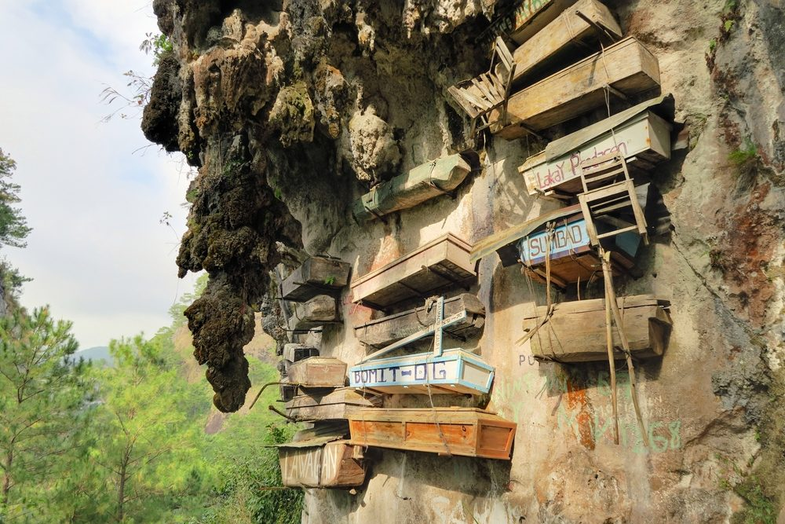
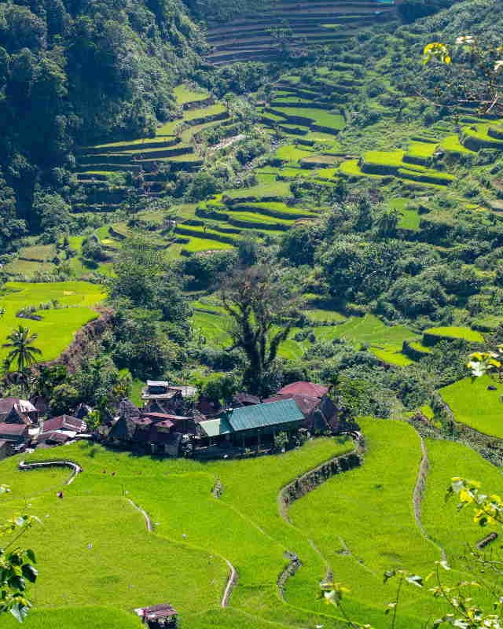
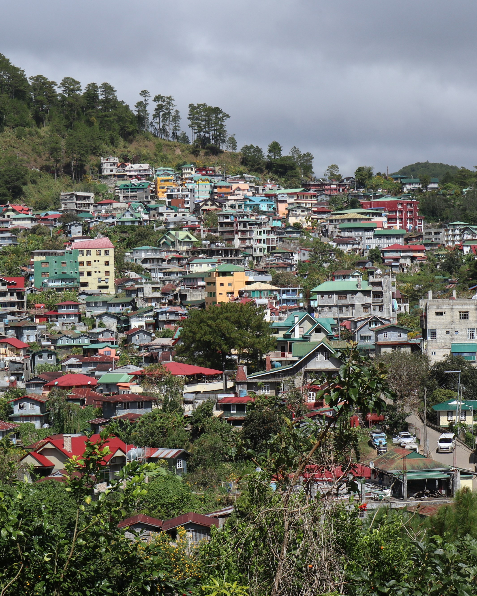
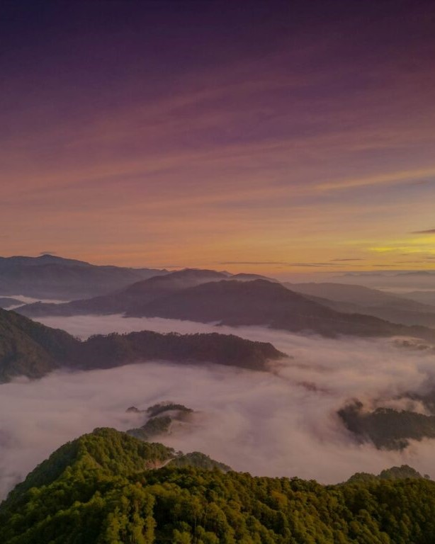
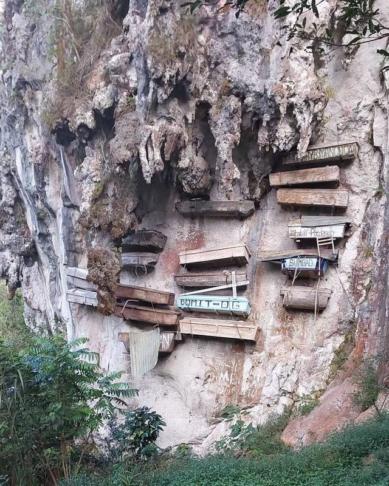
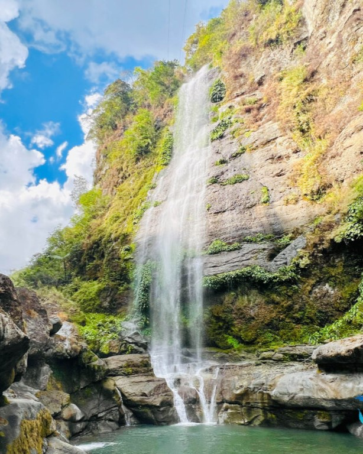
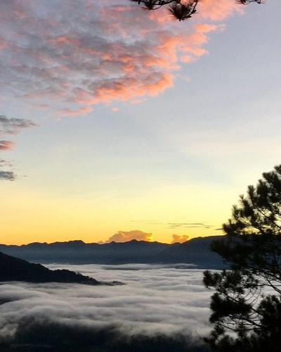
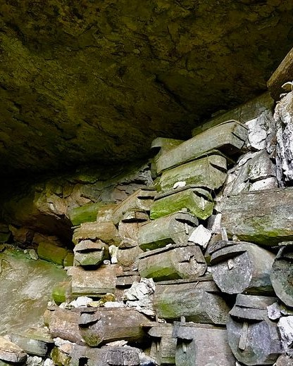
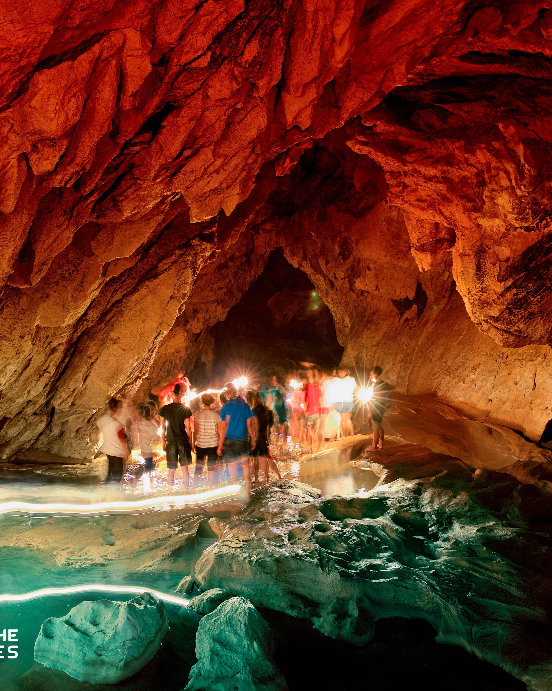

Escape into the breathtaking beauty and serene landscapes of Sagada, Philippines! Known for its cool climate, stunning mountain views, and rich cultural heritage, this hidden gem is a paradise for nature lovers and adventure seekers alike. From the famous hanging coffins to the enchanting caves, waterfalls, and sea of clouds, there’s so much to explore and experience. In this section, I’ll share why I’m eager to visit, the sights I’m most excited to see, and what makes Sagada a truly magical destination.

Sagada is a peaceful mountain town in the Philippines known for its breathtaking landscapes and rich cultural heritage. It is famous for its hanging coffins, limestone caves, and scenic rice terraces. Visitors go there to enjoy cool weather, adventure activities, and a glimpse of traditional Igorot life.
I have visited Baguio many times, but I have never been to Sagada. I want to go there to experience its peaceful environment and natural beauty. I believe Sagada is a place where one can reflect, connect with oneself, and appreciate the deeper meaning of life.

#Sagada_Terraces

#Sagada_Villages

#Sagada_Clouds

#Hanging_Coffins

#Bomod_Ok

#Kiltepan

#Lumiang_Cave

#Sumaguing Cave
{kind=link}